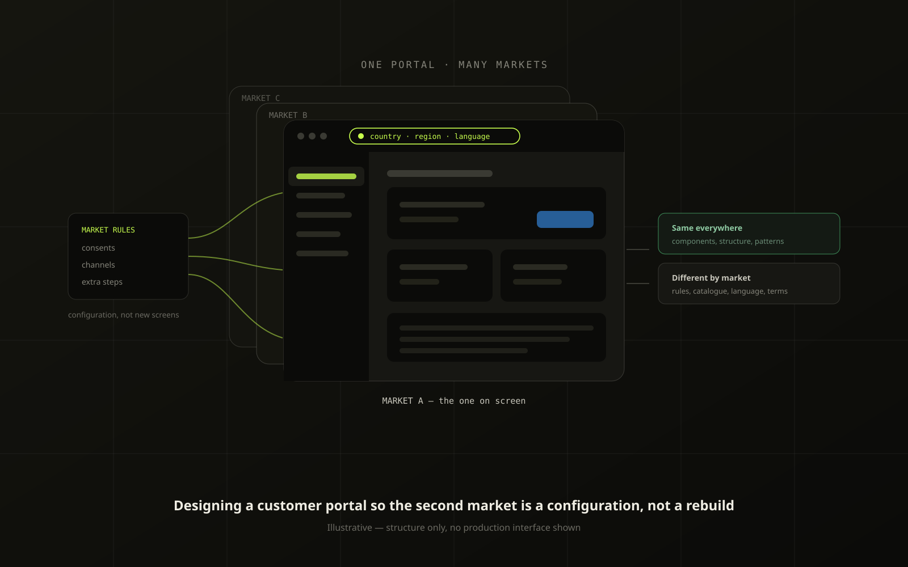
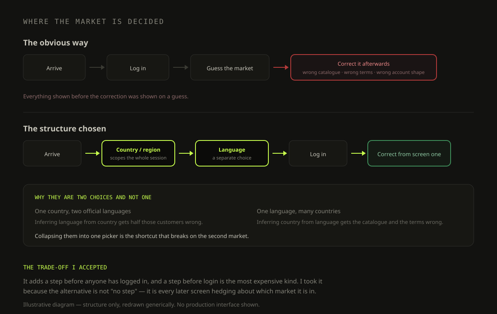
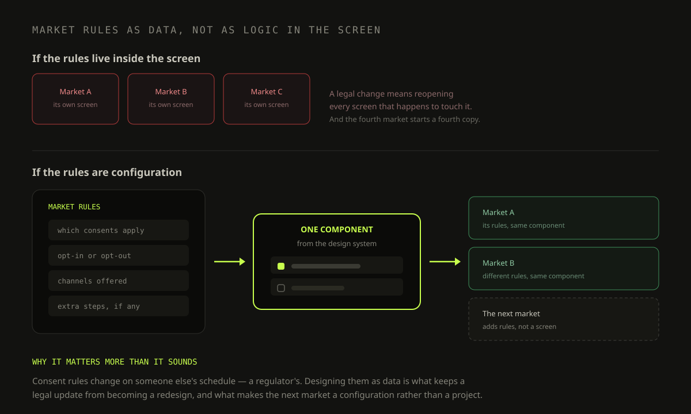

One Portal, Many Markets: Designing for the Second Country
Ordering, financial documents and service for a global customer base — where the market is a design constraint, not a translation job

A single customer portal covering ordering, order visibility, financial documents, service and account management — used by customers in different countries, in different languages, under different rules.
The interesting problem was never the screens. It was that almost every screen means something slightly different depending on which market you open it in, and the first version of anything is always designed for one of them.
Described at a structural level: diagrams are my own redrawings and no production interface, customer data or internal tooling appears. Happy to walk through the real work in a call.
A portal like this looks like one product and behaves like a dozen. A catalogue, product pages, a cart and a checkout; then order history, financial documents, a service area and account settings. Each of those already has a non-trivial domain behind it. Then each market adds its own layer: what customers may be shown, what they must consent to, how they are identified, which extras exist locally. The company had been solving that the way most companies do at first — per market, per team, in parallel.
- Designs kept being built for one market and then discovered on contact with the second: a layout that assumed one language's word length, a flow that assumed one country's rules.
- Country and language were being treated as the same choice. They are not — one country can have two official languages, and one language spans many countries.
- Consent and communication rules differ by market and change over time, so anything hardcoded into a screen is wrong by the next legal update.
- Some markets genuinely need more than others. Without somewhere for that to live, "this market is different" becomes a fork, and forks do not get maintained.
Design the portal so that a new market is a configuration of the same product, not a new version of it — and so the differences that are real are visible in the structure rather than patched into screens.
- Own the UX/UI strategy for the portal and the structure the market variations hang from.
- Design the entry, identity and language architecture.
- Work with regional and product stakeholders to separate what genuinely varies from what only looked like it did.
- Keep the whole thing inside the design system rather than beside it.
Where it broke, not where it was asked about. The most useful input was not a research session, it was the pattern in the rework: which designs came back when a second market picked them up. Nearly all of them failed on the same three things — identity, content length and consent.
Sessions with the regional teams. Each market's team knows its own rules and assumes the others work the same way. Getting them in the same conversation is how you find out which differences are legal requirements and which are just habit — and the second group is much bigger than anyone expects.
Decision: country is chosen before login, not after. The obvious flow is to authenticate and then localise. It does not work here, because the market determines what a customer can even be shown — the catalogue, the terms, and how the account itself is structured. Putting country and region ahead of the login means the whole session is scoped correctly from the first screen instead of being corrected afterwards. It costs a step up front, and it removes an entire category of "why am I seeing this".
Decision: country and language are two choices, not one. Collapsing them is the classic shortcut and it breaks immediately on any bilingual market. Keeping them separate means a customer picks where they are and, independently, how they want to read — and it stops the system from inferring one wrongly from the other.
Decision: market rules are data the components take, not logic inside them. Consent and communication preferences vary by market and keep changing. If those rules live inside the screen, every legal update is a redesign. Designing them as configuration the same components consume means a market change is a change to the rules, not to the product.
Decision: local differences are variants, not forks. Some markets really do need an extra level of navigation or an additional step. Those live as variants of the shared pattern, inside the design system, so they stay maintained. A fork is the version that is correct on the day it ships and quietly rots afterwards.


Opening in another country exercises the structure that already exists instead of producing a parallel version of the product.
Consent and preference rules move as data, so a market's update does not reopen the screens it touches.
What varies by market is now something you can point at in the structure, rather than tribal knowledge held by whoever built that market's screens.
- Regional conversations changed shape: less "our market is special", more "which of these differences is actually a rule".
- Design reviews stopped rediscovering the same three failure modes on every new flow.
- Multi-market is an architecture problem wearing a translation costume. By the time it looks like a copy problem, the structural decision has already been made badly.
- Most claimed market differences are habit, not law — but you only find that out by getting the markets in the same room, and the ones that remain are non-negotiable.
- The cost of the right structure is paid once, up front, by someone who will not see the benefit. The benefit lands on whoever opens the fourth market.